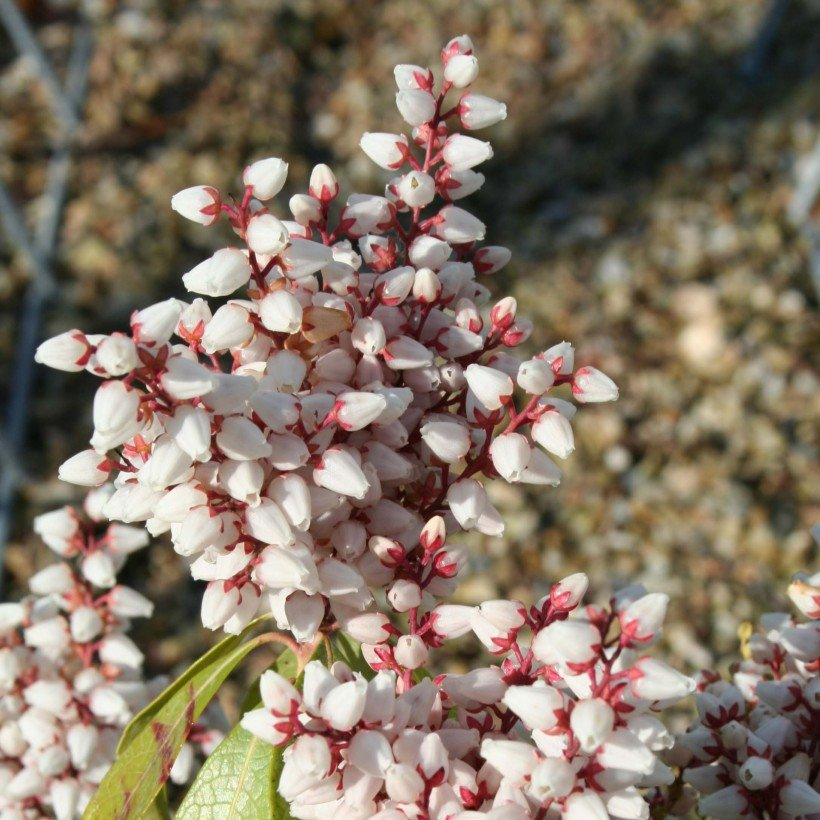

Les Arbustes
Qu'est ce q'un arbuste
Comment planter les arbustes
La Haie d'Arbustes
On peut réaliser de belles haies fleuries. On plante tous les 80cm pour une haie en ligne.
Massifs fleuris

Pour un massif réussi; on mélange des arbustes à feuillage persistant et des arbustes à fleurs dont la floraison s'étale sur la saison. On complète avec des vivaces à longue floraison sur le devant du massif.
Arbustes en pot
Tous les Arbustes peuvent se cultiver en pot sur la terrasse. On choisit un pot suffisamment grand pour assurer le bon développement de la plante. On surveille l'arrosage; notamment en été et on apporte de l'engrais 2 fois par an. Découvrez nos meilleures plantes pour Terrasses et Balcons.
Quelque ARBUSTE
Abelia Edward Goucher
Un arbuste de petite taille au port arqué, retombant gracieusement. Il porte un petit feuillage vert sombre semi-persistant et fleurit en abondance de l'été à l'automne, durant 3 mois, se couvrant d'une multitude de petites fleurs tubulaires d'un rose-lilas. Cet abélia pousse sans exigences et apporte un charme fou aux massifs d'arbustes et aux haies basses.
Amandier à fleurs
Merveilleux arbuste à floraison printanière très hâtive, faite de petits pompons rose tendre naissant tout le long de rameaux rougeâtres, avant les feuilles. Il est rustique et facile à cultiver en sol ordinaire, au soleil ou à mi-ombre. Il se différencie de l'amandier de Chine Multiplex par un développement un peu plus important. Installez-le dans un sol pas trop sec, à l'abri des vents forts et des courants d'air glacés.
Amélanchier du Canada
Joli petit arbuste présentant un intérêt ornemental 9 mois sur 12! C'est une espèce d'arbuste caduc facile à cultiver, prisée pour sa floraison abondante en petites grappes délicates d'étoiles blanches au printemps, brève mais généreuse et son feuillage d'automne aux coloris intenses, évoluant entre le rouge orangé, le jaune cuivré et le pourpre.
Andromède du Japon
Le Pieris ‘Bonfire' est une jolie variété naine, au port dense et arrondi, qui s'orne de jeunes feuilles saumonées à orangées au printemps, précédent une abondante floraison blanc-crème à rosée, en avril. Intéressant toute l'année, ne dépassant pas 1m en tous sens, cet arbuste persistant est particulièrement adapté à la culture en bac pour la terrasse. Parfait aussi dans un massif de terre de bruyère mi-ombragé !